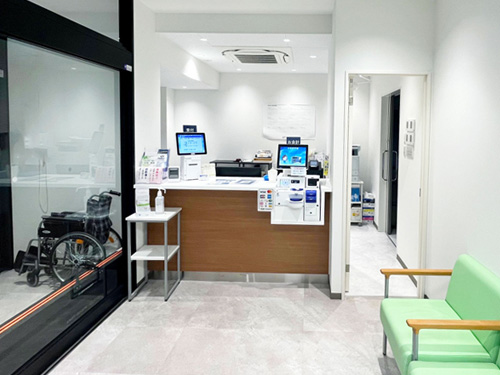
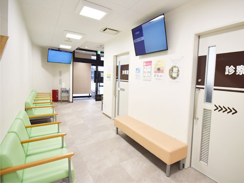

インフルエンザ
予防接種2,900円
予約受付中
予防接種の効果は接種から約2週間で現れ、約5ヶ月間持続するといわれているため、流行前の早めの接種をお勧めしています。
学生・受験生は500円引きで応援します。
18歳以下のお子様には、痛くない鼻スプレー型ワクチン「フルミスト®」にも対応しています。

当院の特徴01皮下注射が税抜2,900円
02学生は学割で500円引き
受験シーズン・テストシーズを迎える学生さんを応援するため、学生証の提示で500円引きとなります。
中学生・高校生・大学生・専門学校生、予備校生が対象です。
受験生の体調管理に、ぜひご活用ください。
03痛くない鼻スプレー型も
注射が苦手なお子様でも安心して接種できる、鼻から吸入するタイプのワクチン「フルミスト®」を取り扱っています。
フルミスト®について05〇〇市公費接種に対応
当院は、〇〇市のインフルエンザ公費接種が可能な指定医療機関です。
助成対象の方については、自己負担額〇〇円(税込)で接種できます。
料金表
| 種類 | 料金 | 備考 |
|---|---|---|
| 皮下注射 | 2,900円(税抜)3,190円(税込) | |
| 皮下注射（学割） | 2,400円(税抜)2,640円(税込) | 必ず学生証をご持参ください |
| 皮下注射（公費助成） | 〇〇円(税抜)〇〇円(税込) | 実施期間は2026年10月1日～12月31日まで |
| フルミスト® | 6,364円(税抜)7,000円(税込) | 小学生以上～18歳以下が対象 |
横にスクロールできます。
接種可能日カレンダー
予約する鼻スプレー型ワクチン
「フルミスト®」
経鼻インフルエンザワクチン「フルミスト®」は、鼻にスプレーするタイプのインフルエンザワクチンです。
スプレータイプなので痛みがほとんどなく、注射が苦手なお子様にオススメです。
フルミスト®は病気をひきおこす力がほとんどないインフルエンザウィルスを使用しています。
ワクチンスプレー後、鼻の粘膜にインフルエンザウィルスに対する抗体ができるため、インフルエンザウィルス侵入阻止の効果があり、皮下注射ワクチンに比べて発症を抑える力が強くなっています。
対象
小学生以上～18歳以下
料金
6,364円(税抜)7,000円(税込)
副反応について
接種後1週間前後で発熱、のどの痛み、鼻水、鼻づまりなどがみられることがありますが、うつることはありません。
ごく稀にアレルギー症状、ショック、神経症状などが起こることがありますが、他の注射ワクチンや飲むワクチンに比べて頻度が高いことはありません。
予防接種の流れ
-
- 01ご予約

- 当院の予防接種は完全予約制です。
事前にWEB予約をしてからご来院ください。 予約する
- 01ご予約
-
- 03来院、受付

- 当日は以下のものをお持ちの上、予約時間に受付へお越しください。
- 予診票
- マイナ保険証もしくは資格確認書
必要に応じてお持ちいただくもの
- 東振協・あまの創健の利用券
- 母子手帳（小児の場合）
- 学生証（学割希望の場合）
- 住所、氏名、年齢を確認できるもの（公費利用の場合）
※予診票を持参されていない方は、待合室でご記入をお願いいたします。
※東振協・あまの創健の利用券をご利用の方は、必ず当日に「利用券」と「保険証」を受付にご提示ください。後日の提示はお受けしておりません。
- 03来院、受付
-
- 04お会計

- 精算機でお会計をお願いいたします。
お支払方法は現金のほか、クレジットカード（VISA、MASTER、JCB、AMEX、Diners、Discover）、交通系ICカード、nanaco、QUICPay、J-Debit、楽天Edy、WAON、銀聯カードもご利用いただけます。
- 04お会計
-
- 05医師による診察
- お名前が呼ばれましたら、診察室へお入りください。
予診票や薬の確認をさせていただきます。
-
- 06ワクチン接種
- 皮下注射の方は、利き腕でない方の上腕外側部に接種します。
肩（上腕）を出しやすい服でお越しください。
-
- 07経過観察、帰宅

- 副反応（体調の変化など）が起きないか、待合室で15分ほど経過観察後、異常がなければご帰宅となります。
当日の入浴は可能ですが、接種部位を強くこすらないようにしてください。
また、当日の激しい運動はお控えください。
- 07経過観察、帰宅
よくある質問
Q何歳から接種できますか？
A12歳（中学生）以上から接種できます。
Q副反応はありますか？
A皮下注射では腕の痛みや発熱がみられることがあります。
フルミスト®では鼻水・鼻づまりなどが出る場合があります。
Q学割の対象は？
A中学生・高校生・大学生・専門学校生・予備校生が対象です。
学生証の提示で割引が適用されます。
Q他のワクチンと同時接種できますか？
A可能です。診察時に医師へご相談ください。
インフルエンザ
予防接種について
インフルエンザは毎年流行するウイルス感染症で、発熱・頭痛・関節痛などの症状を引き起こします。
予防接種は重症化を防ぎ、発症しても症状を軽くする効果が期待できます。
接種のタイミング
10月～12月の接種が推奨されています。
効果は接種後2週間ほどで現れ、約5か月持続します。
接種回数
13歳以上：1回
12歳以下：2回（医師が判断）
アクセス
〒157-0066
東京都世田谷区成城6-5-25
第一住野ビル1・2階